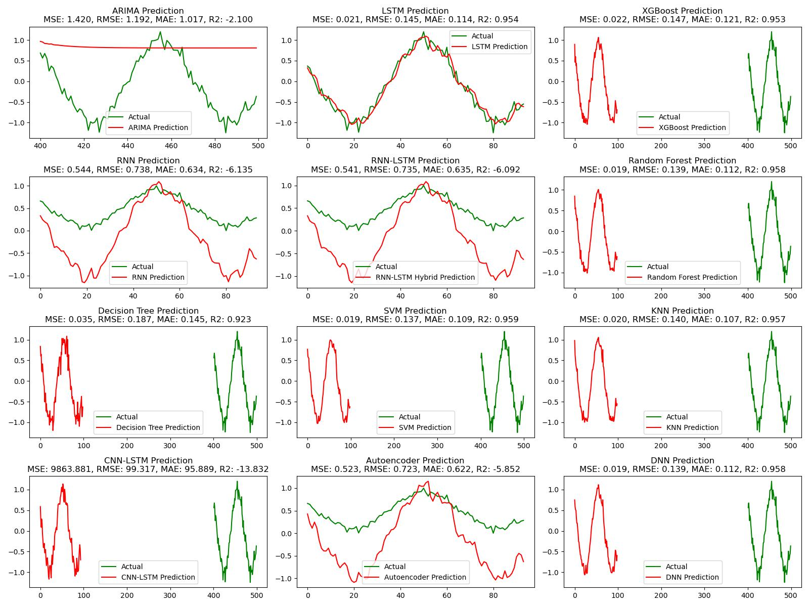
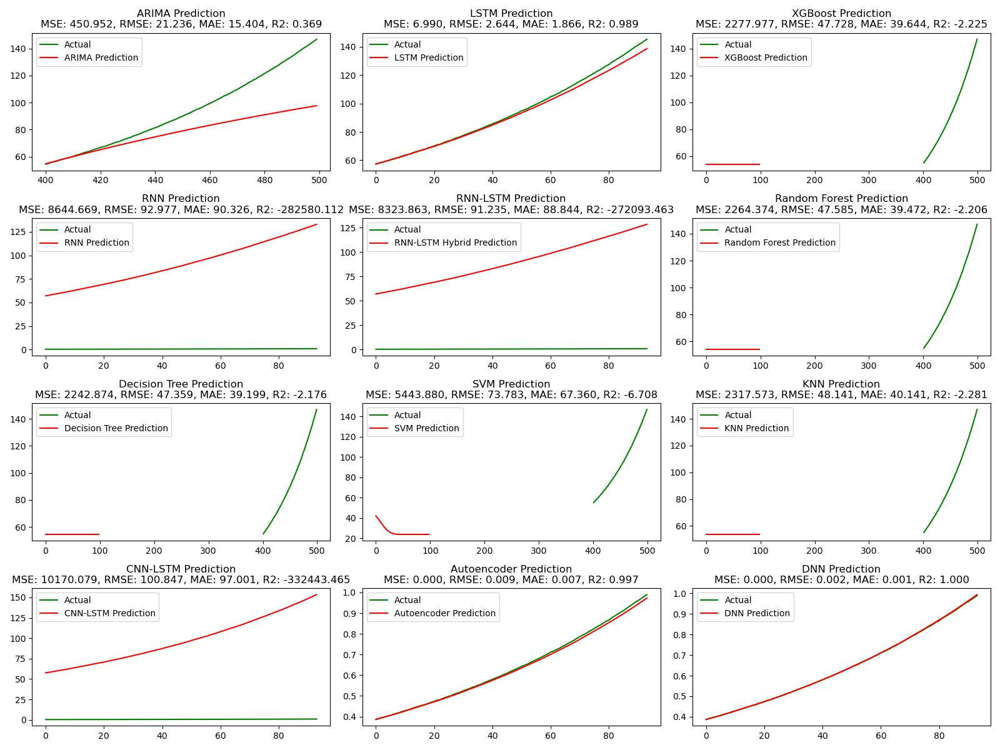
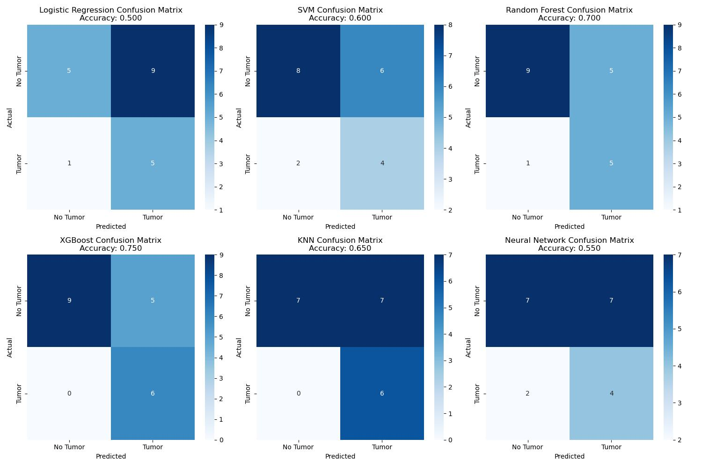
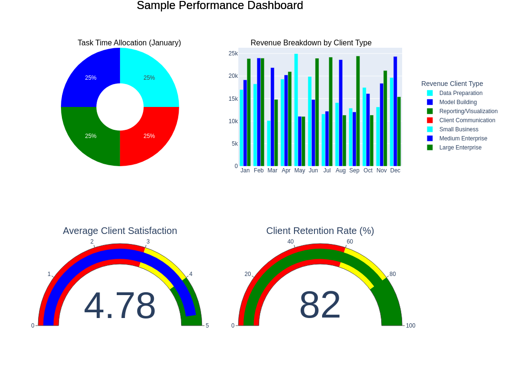

About Unveilica
Unveilica is a forward-thinking technology company specializing in data analytics, machine learning engineering, web development, algorithm development, and AI solutions, with a particular focus on deep learning. The company caters to a wide range of industries, including healthcare and small businesses, helping them harness the power of data and technology to drive innovation and growth.
As its name suggests, Unveilica helps clients uncover what is hidden in their data with the help of cutting-edge AI technology. What makes Unveilica unique is the dedication to crafting excellent algorithms that solve complex, real-world problems. Unveilica doesn’t just provide solutions; it designs intelligent systems that address specific challenges, optimize processes, and generate actionable insights.
Whether it's through advanced AI applications, predictive modeling, or custom software development, Unveilica ensures clients are equipped with the tools to stay ahead in a rapidly evolving digital landscape.
The commitment to excellence and tailored solutions empowers businesses of all sizes to unlock their potential, improve decision-making, and digitalize their operations for a smarter, more efficient future.
Experiences
With a background in physics and extensive experience in data analysis, data science, research, problem-solving, and project management, I have developed strong programming skills in Python and SQL. I specialize in designing and optimizing efficient, scalable data pipelines, scripting SQL queries, building robust ETL processes, and managing databases. My expertise also extends to web development and deploying machine learning and deep learning models.
I am proficient in using tools like Pandas and Spark for data manipulation and statistical analysis, enabling me to extract actionable insights that drive business decisions. I have successfully applied machine learning and deep learning algorithms to real-world datasets for tasks such as time series forecasting, trend analysis, and category classification.
Additionally, I have significant experience in utilizing data visualization tools such as Matplotlib, Seaborn, Power BI, and Tableau to create interactive, insightful visualizations that effectively convey complex data patterns.
My experience includes working with cloud-based solutions, particularly AWS, and designing intuitive dashboards and KPIs to support data-driven decision-making. Throughout my career, I have collaborated with cross-functional teams and international partners to analyze data and present findings in a clear, actionable manner. Committed to continuous learning and staying at the forefront of emerging technologies, I ensure the delivery of high-quality, impactful solutions tailored to client needs.
Skills
- Programming Languages: Python, SQL
- Data Science, Data Engineering, and Data Analysis
- Statistical Data Analysis
- Scientific Research
- Machine Learning (Python)
- Deep Learning (Python)
- Project Management
- ETL and Pipeline Development
- Dashboard & KPI Development
- Time Series Analysis, Modeling, & Forecasting
- Data Visualization
- Web Development
- Research & Analysis
Services
- Data Science: Expert in data analysis, predictive modeling, machine learning, NLP, and data visualization. Services include statistical analysis, model development, recommendation systems, and consulting on AI integration for business strategies.
- Data Engineering: Specializing in building scalable data architectures, ETL pipelines, cloud solutions, and big data processing. Also offering database management, data security, and performance optimization.
- Machine Learning Engineering: Development and deployment of machine learning models, deep learning, computer vision solutions, time series forecasting, and reinforcement learning algorithms.
- Web Development: Creating responsive websites with modern front-end technologies (HTML, CSS, JavaScript), tailored to deliver engaging and functional user experiences.
- Research & Analysis: Offering data-driven research, literature reviews, statistical modeling, and custom reporting for academic or business purposes.
- Dashboard and KPI Development: I design and develop interactive dashboards and Key Performance Indicators (KPIs) to provide actionable insights for your business. Using tools like Tableau, Power BI, and custom web solutions, I create real-time visualizations that empower decision-makers to track performance metrics, identify trends, and make data-driven decisions. Whether you're looking to optimize operations, monitor financial outcomes, or improve customer engagement, I build intuitive and dynamic dashboards tailored to your specific business needs.
Service Demonstrations




Projects
Robust MRI Technique for Early Cancer Detection: Statistics show that cancer is one of the most deadly diseases worldwide. One of the key goals of modern medicine is to identify and diagnose diseases in their early stages, which significantly improves patient outcomes. In this context, the analysis of the human body’s systems is crucial. Medical research aims to develop drugs and technologies that reduce mortality rates, often through innovative imaging techniques. Unveilica is developing a robust medical imaging (MRI) technique to detect and identify brain tumors at their early stages, with the aim of significantly improving early cancer diagnosis and treatment, enhancing patient outcomes, and reducing mortality rates.